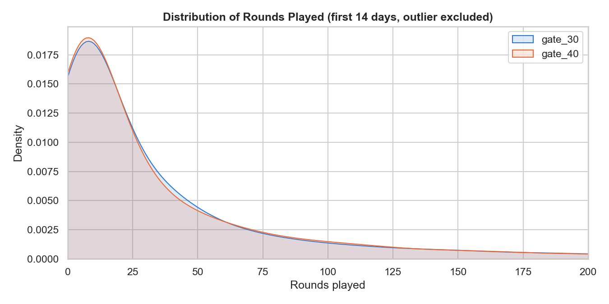
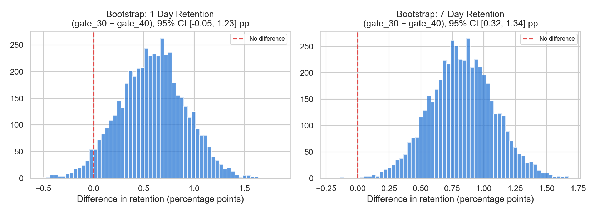
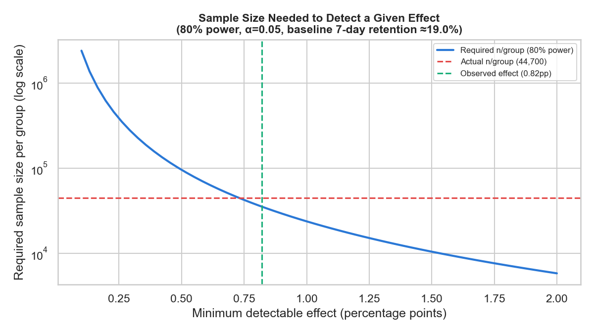

The numbers
Problem
Cookie Cats places a gate that pauses players until they wait or pay.
Product hypothesized that moving the gate later (level 30 → 40) — more
uninterrupted content before the first paywall — would improve
retention. 90,189 players were randomized into gate_30
(control) or gate_40 (treatment) at install. Does the data
support the hypothesis?
Method
- Randomization check — group sizes and a chi-square balance test.
- Engagement check — distribution of rounds played, with the dataset's one extreme outlier (49,854 rounds) excluded from that comparison only.
- Two-proportion z-tests on 1-day and 7-day retention.
- Bootstrap confidence intervals (5,000 resamples) on the retention difference.
- Practical significance check — translate the effect into a player count at scale.
Engagement: no difference

Retention: 7-day tells the real story
| Metric | gate_30 (control) | gate_40 (treatment) | Difference | p-value |
|---|---|---|---|---|
| 1-day retention | 44.82% | 44.23% | +0.59 pp | 0.074 (n.s.) |
| 7-day retention | 19.02% | 18.20% | +0.82 pp | 0.0016 |


A worked example of statistical vs. practical significance
Bonus: designing this test from scratch (power analysis)
Everything above analyzes a test that had already been run. A natural follow-up question: before collecting any data, how would you have decided how many players to randomize? A power analysis, using the control group's observed rate as the planning baseline, answers that — solve for the sample size needed to reliably detect a given Minimum Detectable Effect (MDE) at a chosen significance level and power.
| MDE | Required n / group (80% power, α=0.05) |
|---|---|
| 0.30 pp | 267,020 |
| 0.50 pp | 95,733 |
| 0.82 pp (the effect actually found) | 35,357 |
| 1.00 pp | 23,684 |
| 1.50 pp | 10,414 |

Recommendation
Do not move the gate to level 40. 7-day retention — the more reliable of the two retention metrics — is significantly worse with the later gate, consistently across resampling, with no engagement upside to offset it. Whatever intuition motivated "move the gate later," this test doesn't support it — a good reminder that A/B tests exist precisely to catch cases where an intuitively appealing change doesn't hold up.